🗂️ Моделі прецедентів
Загальна схема 📊

🧑🏻📋Адміністрітор

🧑🏻💼Керівник

👩🏻💻👨🏻💻Користувач

📃Сценарії використання
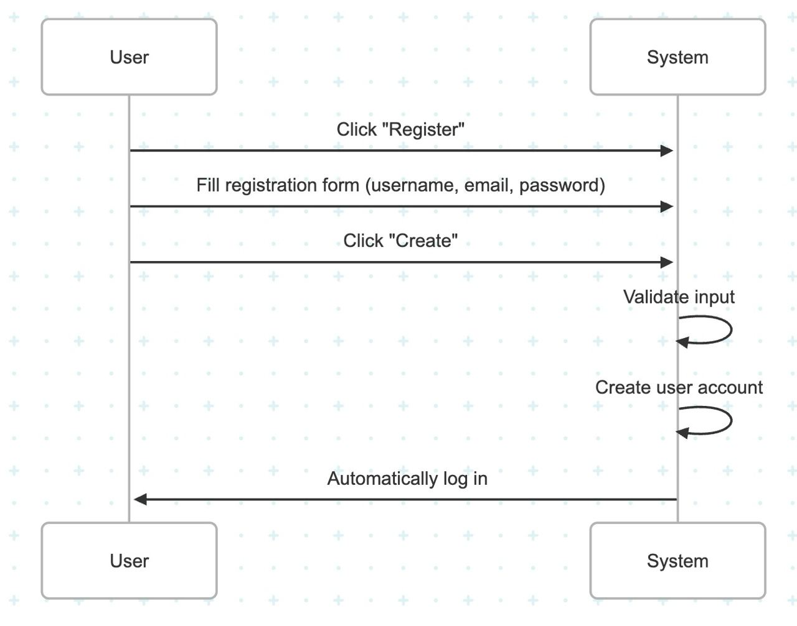
| ID | CreateUser |
|---|---|
| НАЗВА | Створення користувача |
| УЧАСНИКИ | Система, користувач |
| ПЕРЕДУМОВИ | Користувач не зареєстрований системою |
| ОСНОВНИЙ СЦЕНАРІЙ |
1. Користувач натискає кнопку "Зареєструватись". 2. Заповнення полей реєстрації користувачем (ім'я користувача, пароль, пошта). 3. Користувач натискає на кнопку "Створити". 4. Перевірка системою введених полей на валідність. 5. Створення системою облікового запису користувача. 6. Автоматичний вхід у систему користувача. |
| РЕЗУЛЬТАТ | Створення облікового запису користувача |
| ВИКЛЮЧНІ СИТУАЦІЇ |
- Користувач не ввів ім'я користувача (NullUsernameException) - Користувач не ввів пароль (NullPasswordException) - Користувач не ввів пошту (NullEmailException) - Користувач з таким ім'ям вже існує (UserAlreadyExistsException) - Користувач ввів недостатньо сильний пароль (WeakPasswordException) - Користувач вказав неправильний формат пошти (WrongEmailFormatException) |
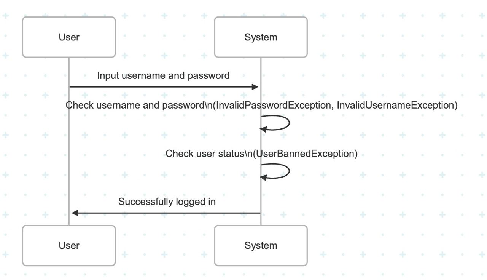
| ID | UserAuthorization |
|---|---|
| НАЗВА | Авторизація користувача |
| УЧАСНИКИ | Система, користувач |
| ПЕРЕДУМОВИ | Реєстрування користувача системою |
| ОСНОВНИЙ СЦЕНАРІЙ | 1. Введення користувачем ім'я користувача та паролю. 2. Перевірка введених даних системою ( InvalidUsernameException або InvalidPasswordException). 3. Перевірка статусу користувача системою (UserBannedException). 4. Вхід користувача у систему. |
| РЕЗУЛЬТАТ | Авторизація користувача системою |
| ВИКЛЮЧНІ СИТУАЦІЇ | - Введення неправильного паролю користувачем (InvalidPasswordException) - Введення неправильного ім'я користувача користувачем (InvalidUsernameException) - Заблокування системою користувача (UserBannedException) |
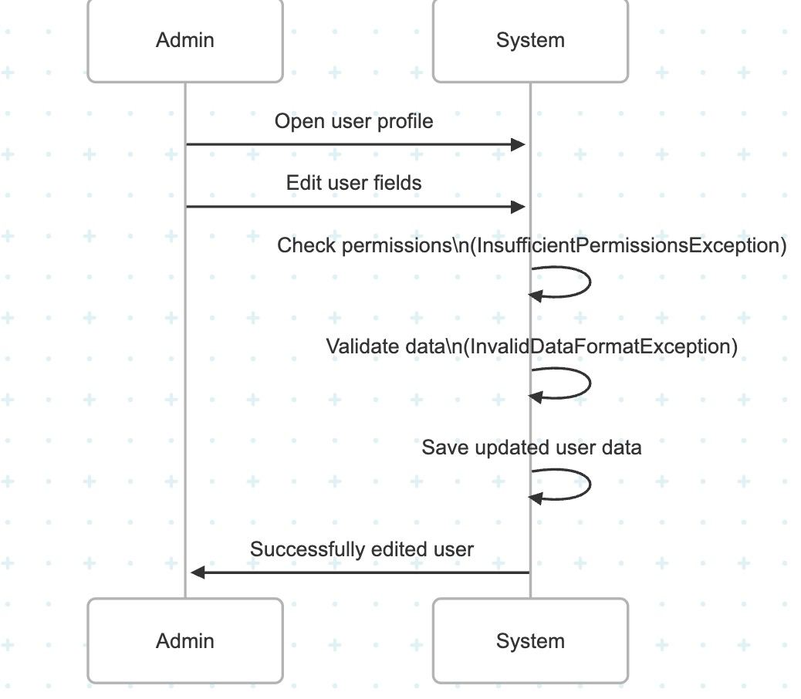
| ID | EditUser |
|---|---|
| НАЗВА | Редагування користувача |
| УЧАСНИКИ | Адміністратор, користувач, система |
| ПЕРЕДУМОВИ | Авторизування системою користувача або адміністратора |
| ОСНОВНИЙ СЦЕНАРІЙ |
1. Адміністратор або користувач відкриває профіль користувача. 2. Користувач або адміністратор змінює потрібні поля. 3. Перевіркка прав системою (InsufficientPermissionsException). 4. Перевірка системою введених даних на валідність (InvalidDataFormatException). 5. Збереження системою оновлених даних користувача. |
| РЕЗУЛЬТАТ | Змінення системою даних користувача |
| ВИКЛЮЧНІ СИТУАЦІЇ |
- Користувач ввів дані у неправильному форматі (InvalidDataFormatException) - Система не знайшла користувача (UserNotFoundException) - Користувач має недостатньо прав для редагування (InsufficientPermissionsException) |
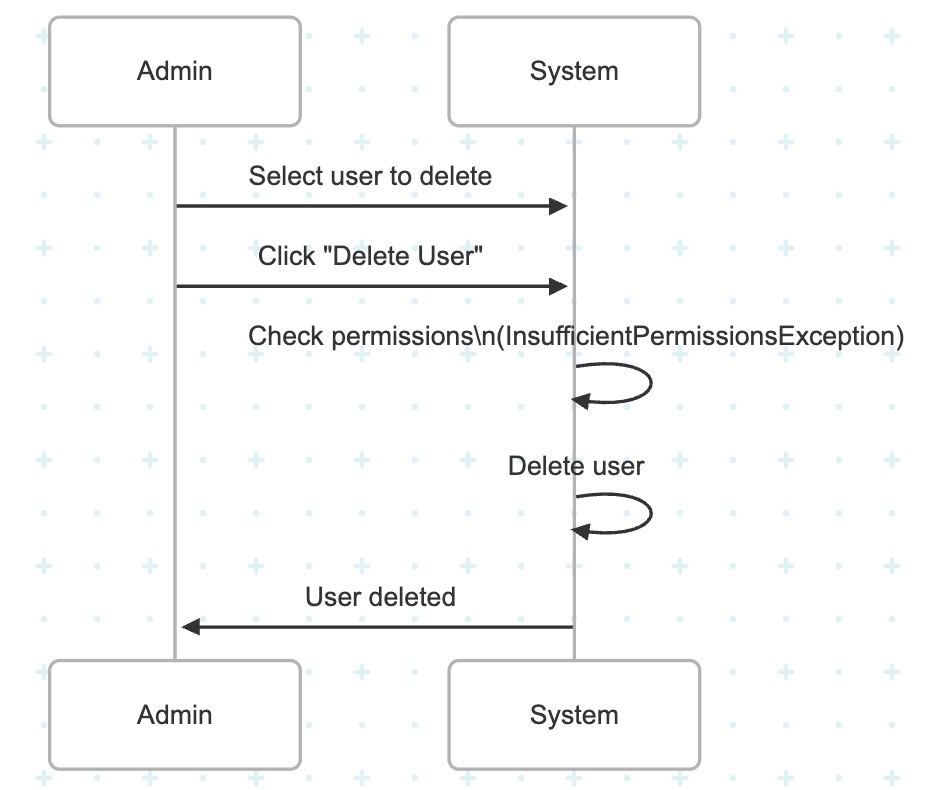
| ID | DeleteUser |
|---|---|
| НАЗВА | Видалення користувача |
| УЧАСНИКИ | Система, адміністратор |
| ПЕРЕДУМОВИ | Авторизація системою адміністратора |
| ОСНОВНИЙ СЦЕНАРІЙ |
1. Вибір адміністратором користувача для видалення. 2. Адміністратор натискає кнопку "Видалити користувача". 3. Перевірка системою прав адміністратора (InsufficientPermissionsException). Видалення системою користувача (UserNotFoundException). |
| РЕЗУЛЬТАТ | Успішне видалення користувача системою |
| ВИКЛЮЧНІ СИТУАЦІЇ |
- Користувач має недостатньо прав для видалення (InsufficientPermissionsException) - Система не знайшла користувача (UserNotFoundException) |
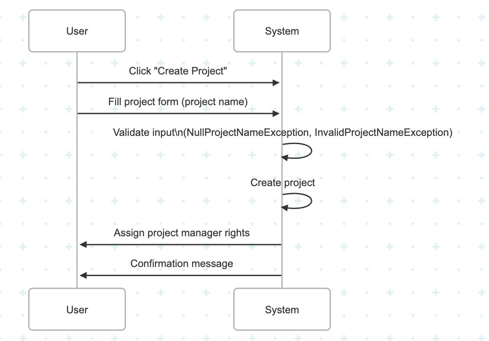
| ID | CreateProject |
|---|---|
| НАЗВА | Створення проєкту |
| УЧАСНИКИ | Система, користувач |
| ПЕРЕДУМОВИ | Авторизація системою користувача |
| ОСНОВНИЙ СЦЕНАРІЙ |
1. Користувач натискає кнопку "Створити проєкт". 2. Заповнення форми користувачем (назва проєкту). 3. Система перевіряє дані на валідність. 4. Створення системою нового проєкту. 5. Система надає права керівника проєкту користувачу. 6. Користувач отримує підтвердження про створення проєкту. |
| РЕЗУЛЬТАТ | Створення проєкту системою та надання прав керівника проєкту користувачу |
| ВИКЛЮЧНІ СИТУАЦІЇ |
- Користувач ввів назву проєкту у неправильному форматі (InvalidProjectNameException) - Користувач не ввів назву проєкту (NullProjectNameException) |
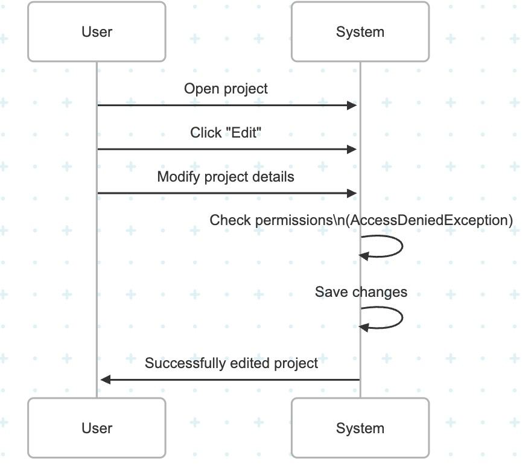
| ID | EditProject |
|---|---|
| НАЗВА | Редагування проєкту |
| УЧАСНИКИ | Адміністратор, система, користувач (керівник проєкту) |
| ПЕРЕДУМОВИ | - Користувач має права на редагування проекту - Система авторизувала користувача |
| ОСНОВНИЙ СЦЕНАРІЙ |
1. Користувач відкриває проєкт. 2. Користувач натискає кнопку "Редагувати". 3. Користувач вносить зміни. 4. Система перевіряє права на редагування. 5. Система зберігає зміни. |
| РЕЗУЛЬТАТ | Змінення системою даних проєкту |
| ВИКЛЮЧНІ СИТУАЦІЇ |
- Система не знайшла проєкт (ProjectNotFoundException) - Користувач має недостатньо прав для редагування (AccessDeniedException) |
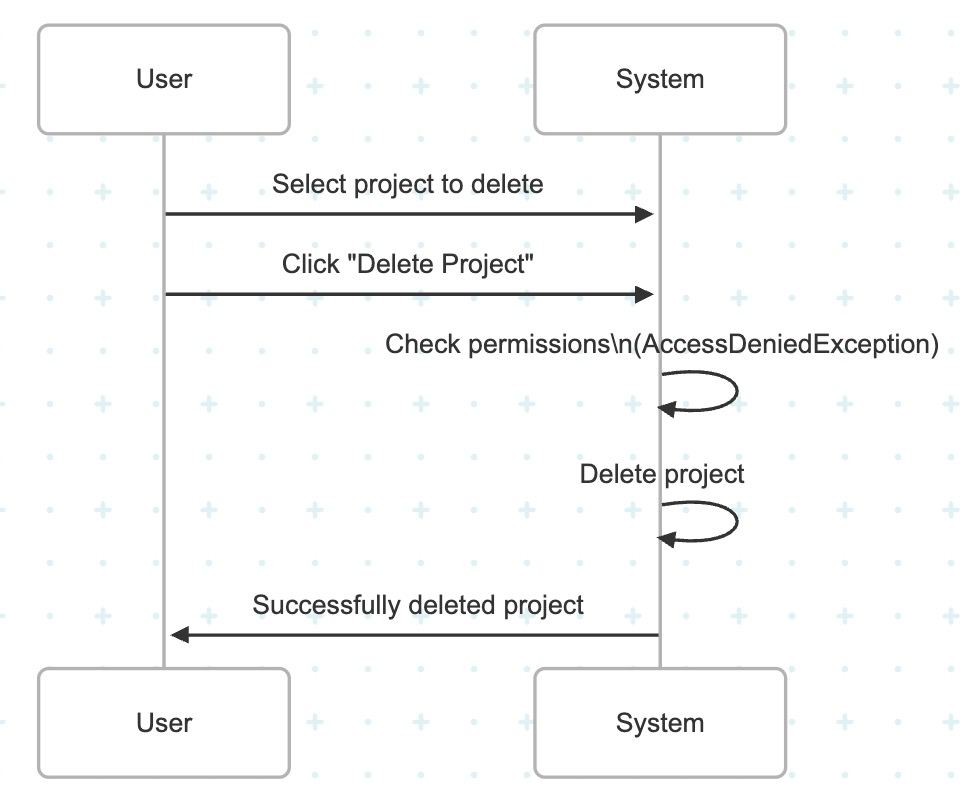
| ID | DeleteProject |
|---|---|
| НАЗВА | Видалення проєкту |
| УЧАСНИКИ | Адміністратор, система, користувач (керівник проєкту) |
| ПЕРЕДУМОВИ |
- Авторизація користувача системою - Користувач має права на видалення проєкту |
| ОСНОВНИЙ СЦЕНАРІЙ |
1. Вибір проєкту для видалення користувачем 2. Користувач натискає кнопку "Видалити". 3. Перевірка прав системою на видалення. 4. Видалення проєкту системою. |
| РЕЗУЛЬТАТ | Видалення системою проєкту |
| ВИКЛЮЧНІ СИТУАЦІЇ |
- Користувач має недостатньо прав для видалення (AccessDeniedException) - Система не знайшла проєкт (ProjectNotFoundException) |
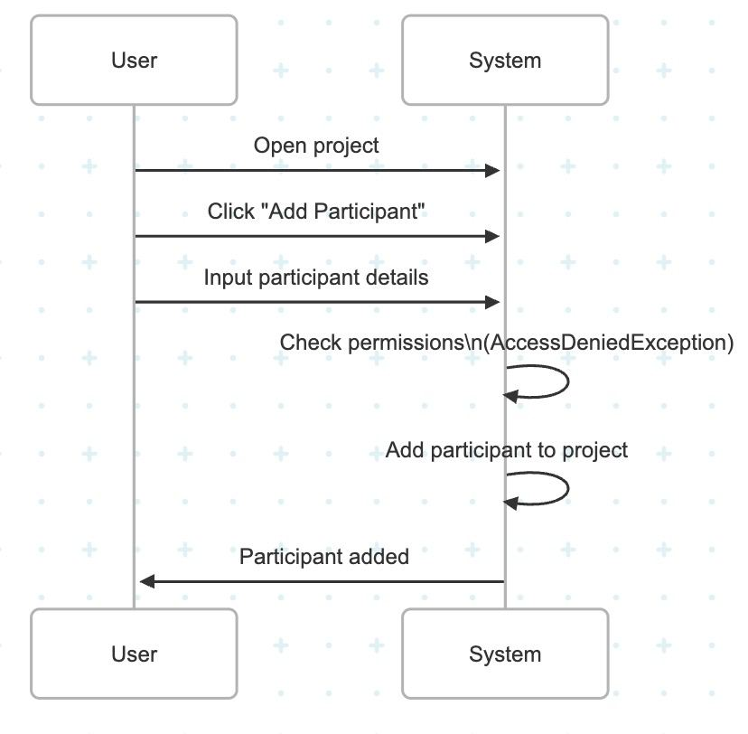
| ID | AddUserToProject |
|---|---|
| НАЗВА | Додавання користувача до проєкту |
| УЧАСНИКИ | Адміністратор, система, користувач (керівник проєкту) |
| ПЕРЕДУМОВИ |
- Користувач має права на редагування проєкту - Авторизація користувача системою |
| ОСНОВНИЙ СЦЕНАРІЙ |
1. Користувач відкриває проєкт. 2. Користувач натискає кнопку "Додати учасника". 3. Користувач вводить дані нового учасника. 4. Перевірка системою прав на додавання учасників 5. Система додає учасника до проєкту. |
| РЕЗУЛЬТАТ | Система додає учасника до проєкту |
| ВИКЛЮЧНІ СИТУАЦІЇ |
- Користувач має недостатньо прав для додавання учасника (AccessDeniedException) - Система не знайшла користувача (UserNotFoundException) - Система не знайшла проєкт (ProjectNotFoundException) |
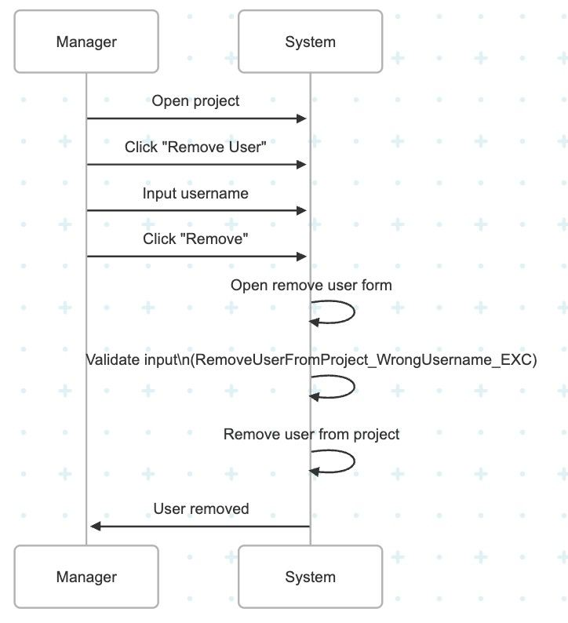
| ID | RemoveUserFromProject |
|---|---|
| НАЗВА | Видалення користувача з проєкту |
| УЧАСНИКИ | Система, менеджер |
| ПЕРЕДУМОВИ | Користувач є учасником проєкту |
| ОСНОВНИЙ СЦЕНАРІЙ |
1. Менеджер переходить у розділ "Проєкти". 2. Менеджер обирає проєкт і натискає кнопку "Видалити користувача". 3. Відкриття системою форми для введення імені користувача 4. Введення менеджером імені користувача (можлива RemoveUserFromProject_WrongUsername_EXC). 5. Менеджер натискає кнопку "Видалити" (можлива RemoveUserFromProject_CancelButton_EXC). 6. Видалення системою користувача з проєкту. 7. Закриття системою форми. 8. Вивід системою повідомлення про успішне видалення користувача з проєкту. |
| РЕЗУЛЬТАТ | Видалення учасника проєкту |
| ВИКЛЮЧНІ СИТУАЦІЇ |
- RemoveUserFromProject_CancelButton_EXC – менеджер натиснув кнопку "Відміна" - RemoveUserFromProject_WrongUsername_EXC – менеджер ввів неправильне ім'я користувача |
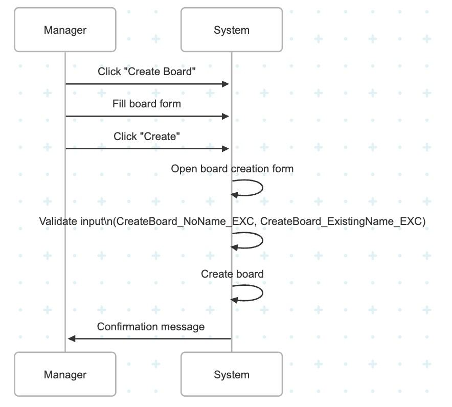
| ID | CreateBoard |
|---|---|
| НАЗВА | Створення дошки |
| УЧАСНИКИ | Система, менеджер |
| ПЕРЕДУМОВИ |
- Система авторизувала користувача - Користувач має права на редагування проєкту |
| ОСНОВНИЙ СЦЕНАРІЙ |
1. Користувач відкриває проєкт. 2. Користувач натискає кнопку "Редагувати". 3. Користувач вносить зміни. 4. Система перевіряє права на редагування. 5. Система зберігає зміни. |
| РЕЗУЛЬТАТ | Створення нової дошки у проєкті |
| ВИКЛЮЧНІ СИТУАЦІЇ |
- Користувач має недостатньо прав для редагування (AccessDeniedException) - Система не знайшла проєкт (ProjectNotFoundException) |
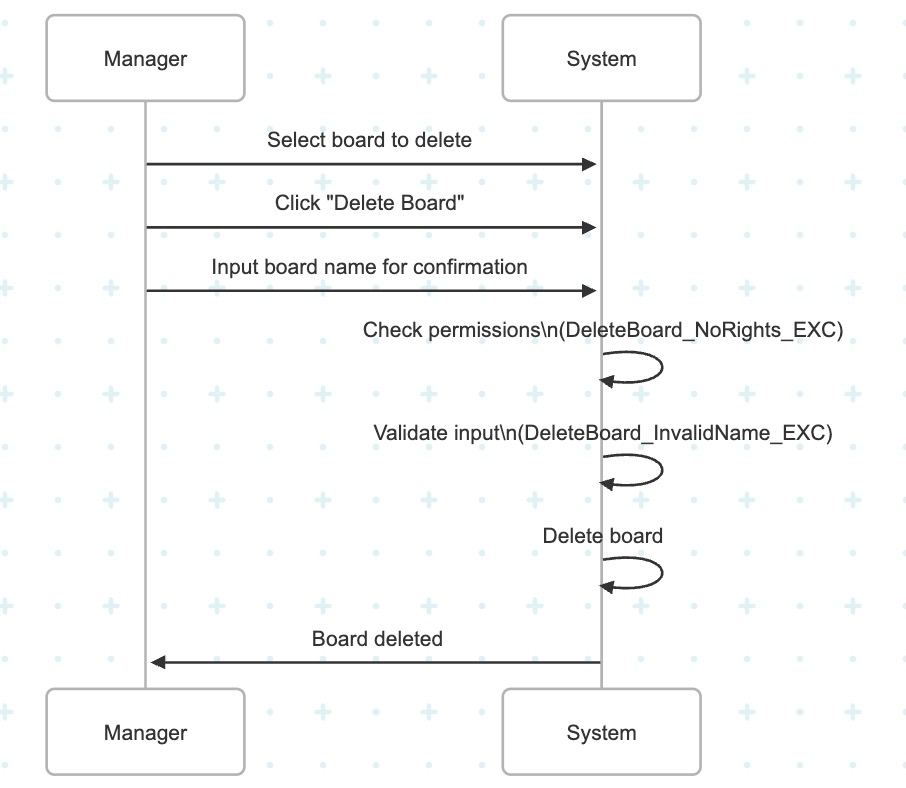
| ID | DeleteBoard |
|---|---|
| НАЗВА | Видалення дошки |
| УЧАСНИКИ | Система, менеджер |
| ПЕРЕДУМОВИ |
- Система містить інформацію про дошку для видалення - Менеджер має дошку у проєкті |
| ОСНОВНИЙ СЦЕНАРІЙ |
1. Менеджер переходить у розділ "Дошки" та обирає потрібну для видалення дошку. 2. Менеджер натискає кнопку "Видалити дошку". 3. Система перевіряє права менеджера на видалення обраної дошки (можлива DeleteBoard_NoRights_EXC). 4. Система відкриває форму підтвердження видалення дошки. 5. Менеджер вводить назву дошки для підтвердження процесу видалення (можлива DeleteBoard_InvalidName_EXC). 6. Менеджер натискає кнопку "Видалити дошку" (можлива DeleteBoard_CancelButton_EXC). 7. Система видаляє дошку з проєкту. |
| РЕЗУЛЬТАТ | Видалення дошки |
| ВИКЛЮЧНІ СИТУАЦІЇ |
- DeleteBoard_CancelButton_EXC – менеджер натиснув кнопку "Відміна" - DeleteBoard_NoRights_EXC – менеджер не має прав на видалення обраної дошки - DeleteBoard_InvalidName_EXC – менеджер вказав ім'я дошки, що не збігається з реальним |
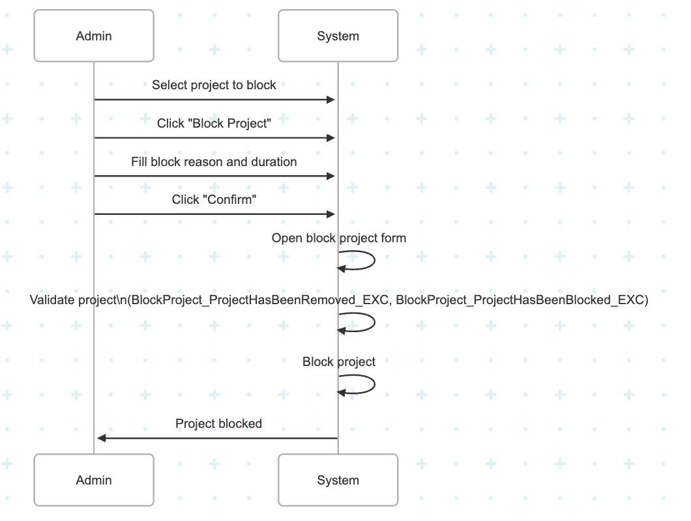
| ID | BlockProject |
|---|---|
| НАЗВА | Блокування проєкту |
| УЧАСНИКИ | Система, адміністратор |
| ПЕРЕДУМОВИ |
- Адміністратор вже є авторизованим - Система містить дані про проєкт - Проєкт порушує умови використання системи |
| ОСНОВНИЙ СЦЕНАРІЙ |
1. Адміністратор переходить у розділ "Проєкти" та вибирає потрібний для блокування проєкт. 2. Адміністратор натискає кнопку "Заблокувати проєкт". 3. Система відкриває форму із параметрами блокування проєкту. 4. Адміністратор заповнює форму, вказуючи причину та термін дії блокування. 5. Адміністратор натискає кнопку "Підтвердити" (можлива BlockProject_CancelButton_EXC). 6. Система перевіряє валідність обраного адміністратором проєкту (можливі BlockProject_ProjectHasBeenRemoved_EXC, BlockProject_ProjectHasBeenBlocked_EXC). 7. Система здійснює операцію блокування й повідомляє менеджера цього проєкту та адміністратора про заблокований проєкт. 7. Система здійснює операцію блокування й повідомляє менеджера цього проєкту та адміністратора про заблокований проєкт. |
| РЕЗУЛЬТАТ | Заблокування проєкту |
| ВИКЛЮЧНІ СИТУАЦІЇ |
- BlockProject_ProjectHasBeenBlocked_EXC – проєкт вже заблоковано - BlockProject_CancelButton_EXC – адміністратор натиснув кнопку "Відміна" - BlockProject_ProjectHasBeenRemoved_EXC – проєкт видалено з системи |
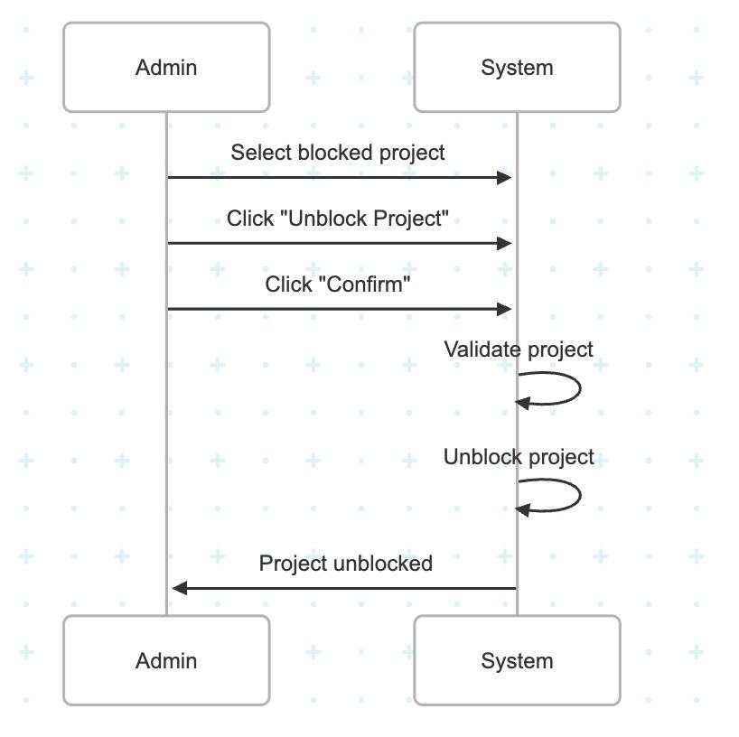
| ID | UnblockProject |
|---|---|
| НАЗВА | Розблокування проєкту |
| УЧАСНИКИ | Система, адміністратор |
| ПЕРЕДУМОВИ |
- Адміністратор авторизований - Проєкт заблокований в системі |
| ОСНОВНИЙ СЦЕНАРІЙ |
1. Адміністратор переходить у розділ "Заблоковані проєкти" та вибирає потрібний для розблокування проєкт. 2. Адміністратор натискає на кнопку "Розблокувати проєкт". 3. Адміністратор натискає кнопку "Підтвердити" (можлива UnblockProject_CancelButton_EXC). 4. Система перевіряє валідність обраного адміністратором проєкту (можливі UnblockProject_ProjectHasBeenRemoved_EXC, UnblockProject_ProjectHasBeenUnblocked_EXC). 5. Система здійснює операцію розблокування й повідомляє менеджера цього проєкту та адміністратора про успішно розблокований проєкт. |
| РЕЗУЛЬТАТ | Розблокування проєкту |
| ВИКЛЮЧНІ СИТУАЦІЇ |
- UnblockProject_ProjectHasBeenUnblocked_EXC – проєкт вже розблоковано - UnblockProject_CancelButton_EXC – адміністратор натиснув кнопку "Відміна" - UnblockProject_ProjectHasBeenRemoved_EXC – проєкт видалено з системи |
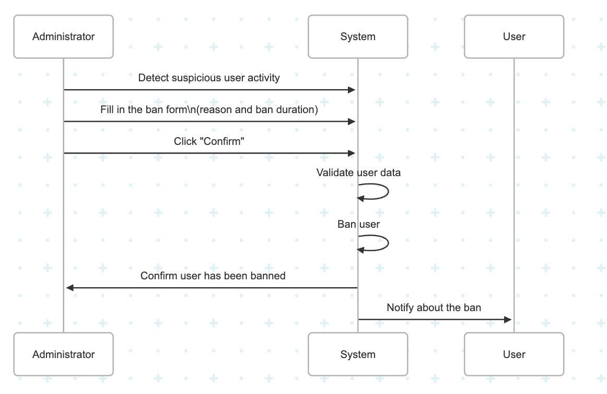
| ID | BanUser |
|---|---|
| НАЗВА | Блокування користувача |
| УЧАСНИКИ | Система, адміністратор |
| ПЕРЕДУМОВИ |
- Порушення користувачем умов використання системи - Користувач багаторазово неправильно вводить пароль - Адміністратор виявив підозрілу активність користувача |
| ОСНОВНИЙ СЦЕНАРІЙ |
1. Адміністратор фіксує підозрілу активність користувача. 2. Адміністратор заповнює спеціальну форму для блокування, вказуючи причину та термін дії блокування. 3. Адміністратор натискає кнопку "Підтвердити" (можлива BanUser_CancelButton_EXC). 4. Система перевіряє валідність введених адміністратором даних (можливі BanUser_NoMatchingUser_EXC, BanUser_UserHasBeenRemoved_EXC, BanUser_UserHasBeenBanned_EXC). 5. Система виконує блокування користувача і повідомляє його про це. |
| РЕЗУЛЬТАТ | Успішне заблокування користувача |
| ВИКЛЮЧНІ СИТУАЦІЇ |
- BanUser_CancelButton_EXC – адміністратор натиснув кнопку "Відміна" - BanUser_NoMatchingUser_EXC – введені дані не відповідають жодному користувачеві - BanUser_UserHasBeenRemoved_EXC – користувача видалено з системи - BanUser_UserHasBeenBanned_EXC – користувача вже заблоковано |
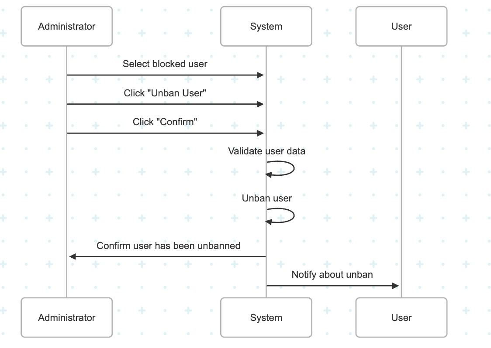
| ID | UnbanUser |
|---|---|
| НАЗВА | Розблокування користувача |
| УЧАСНИКИ | Система, адміністратор |
| ПЕРЕДУМОВИ | Користувач вже заблокований |
| ОСНОВНИЙ СЦЕНАРІЙ |
1. Адміністратор фіксує потрібного користувача. 2. Адміністратор натискає на кнопку "Розблокувати користувача". 3. Адміністратор натискає кнопку "Підтвердити" (можлива UnbanUser_CancelButton_EXC). 4. Система перевіряє валідність введених адміністратором даних (можливі UnbanUser_NoMatchingUser_EXC, UnbanUser_UserHasBeenRemoved_EXC, UnbanUser_UserHasBeenUnbanned_EXC). 5. Система виконує розблокування користувача і повідомляє його про це. |
| РЕЗУЛЬТАТ | Успішне розблоуванння користувача |
| ВИКЛЮЧНІ СИТУАЦІЇ |
- UnbanUser_CancelButton_EXC – адміністратор натиснув кнопку "Відміна" - UnbanUser_UserHasBeenRemoved_EXC – користувача видалено з системи - UnbanUser_NoMatchingUser_EXC – введені дані не відповідають жодному користувачеві - UnbanUser_UserHasBeenUnbanned_EXC – користувача вже розблоковано |
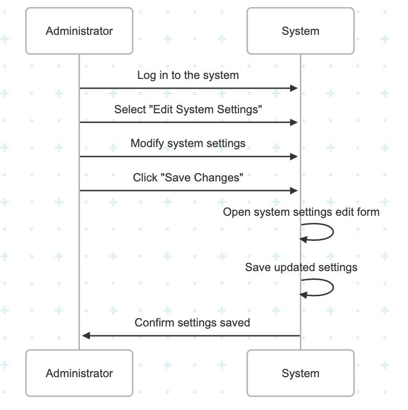
| ID | EditSystemSettings |
|---|---|
| НАЗВА | Редагування налаштувань системи |
| УЧАСНИКИ | Система, адміністратор |
| ПЕРЕДУМОВИ | Адміністратор авторизований |
| ОСНОВНИЙ СЦЕНАРІЙ |
1. Адміністратор входить в систему. 2. Адміністратор обирає опцію "Редагувати налаштування системи". 3. Система відкриває форму зміни налаштувань системи (можлива EditSystemSettings_CancelButton_EXC). 4. Адміністратор змінює налаштування системи (можлива EditSystemSettings_InvalidData_EXC). 5. Адміністратор натискає кнопку "Зберегти зміни". 6. Система зберігає змінені налаштування. |
| РЕЗУЛЬТАТ | Запис змін налаштувань системи |
| ВИКЛЮЧНІ СИТУАЦІЇ |
- EditSystemSettings_CancelButton_EXC – адміністратор натиснув кнопку "Відміна" - EditSystemSettings_InvalidData_EXC – адміністратор ввів невалідні дані |